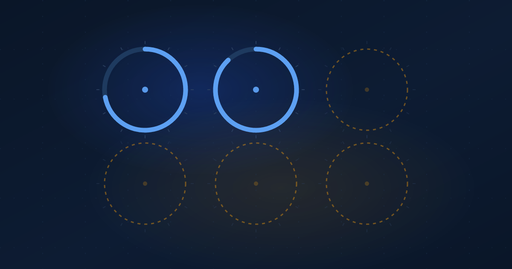

The Other Four
Ibn Sina named six daily levers for health. Your tracker handles two of them.
Ibrahim AbuAlhaol, PhD, P.Eng., SMIEEE
AI Technical Lead
A thousand years ago Ibn Sina wrote down six things that decide whether you stay healthy. Not six treatments. Six things you adjust every day, usually without thinking about them.
The list has aged well. The balance of it has not. We now measure two of the six very precisely, take a rough guess at a third, and quietly ignore the rest. The ones we ignore happen to be the ones that cost nothing.
The six
Ibn Sina set them out in the Canon of Medicine, finished around 1025. Later European physicians called them the non-naturals, which is a confusing label. It never meant unnatural. It meant the things that are not part of your body itself but act on it constantly.
He did not invent the list. Versions of it run back to Galen, eight centuries earlier. What Ibn Sina did was organise it into something a physician could work through in order, and the Canon then taught medicine across Europe and the Islamic world for roughly six hundred years. Here it is.
- The air around you
- What you eat and drink
- Sleep and waking
- Movement and rest
- What your body takes in and lets go
- Your emotional state
The order shifts between manuscripts. The membership does not.
What your watch actually sees
Lay a modern fitness tracker against that list.
Sleep it measures well. Movement it measures very well, because counting steps and heart rate is what the hardware was built for. That is two.
Your emotional state it guesses at, usually from heart rate variability, and hands back a stress score or a readiness number. Useful as a rough proxy. Not a reading.
The air you breathe it cannot see. What you eat and drink, only if you type it in, which almost nobody keeps up past the third week. What your body takes in and lets go, nothing at all.
So the honest tally is two measured, one inferred, three invisible. A device you paid a few hundred for covers a third of the list.
Managing what you measure
There is an old management line about how what gets measured gets managed. The uncomfortable half of it is the reverse. What does not get measured tends not to get managed at all.
That is the real cost here. Not that your watch is missing data, but that your attention quietly rearranges itself around the numbers you can see. You close the rings. You chase the sleep score. Meanwhile the stale air in the room you sit in for nine hours, the water you did not drink, and the argument you are still carrying at eleven at night are all doing their work on you, unrecorded and unmanaged.
Ibn Sina put emotional state on the same list as food and sleep on purpose. He wrote a separate treatise on the heart and the emotions, and in the Canon he described melancholy as something that shows up in the body as much as the mind. He was not being poetic. He treated how you feel as a cause of physical illness, sitting level with what you eat.
The two your device measures are the two that are hardest to change. The four it ignores are the cheapest.
Where the opportunity is
This is the part worth acting on.
Sleep fights your job and your children. Movement fights your calendar. Both are measured to three decimal places and both are genuinely hard to shift.
The four nobody measures are, for most people, the cheapest things on the whole list. Opening a window. Drinking water. Keeping email out of the bedroom. Putting an argument down before you sleep on it. None of that needs a subscription, a gym, or another device, and all four sat on a list written a thousand years before anyone sold you a wearable.
That asymmetry is the opportunity. The expensive half of the list is already instrumented and already difficult. The free half is uninstrumented and mostly easy, and nobody is selling it to you, which is exactly why it goes unnoticed.
The part that outlived the rest
Ibn Sina's medicine got plenty wrong. The four humours are not real. His anatomy was inherited and often mistaken. But the six-item list has outlived nearly everything else in the book, because it is not really a theory about the body. It is an inventory of the levers a person actually has.
A thousand years on, the levers have not changed. Only our ability to measure two of them has. It would be an odd result if better instruments left us worse at the four they cannot read.
What to do this week
- Write the six down and mark each one measured, guessed, or invisible. Most people end up with four in the last two columns.
- Pick one from the invisible group rather than the measured group. The measured ones already have your attention.
- Give it a marker you can see without a device: a glass of water on the desk, a window opened at a fixed hour, a rule about when the phone leaves the bedroom.
- Leave the sleep score alone for a fortnight. Chasing a number you cannot directly control is how people end up sleeping worse.
Related Articles
References & Extended Literature
- Avicenna (Ibn Sina). Al-Qanun fi al-Tibb (The Canon of Medicine), c. 1025. Internet Encyclopedia of Philosophy overview: https://iep.utm.edu/avicenna-ibn-sina/
- "From Galen's De Sanitate Tuenda to Holistic Health: A Historical Study of the Six Non-Natural Factors." Traditional Medicine. https://traditionalmedicine.actabotanica.org/
- "Sleep and Wakefulness Correction in Different Seasons From Avicenna's Perspective." PMC3745764. https://www.ncbi.nlm.nih.gov/pmc/articles/PMC3745764/
- Psychiatric Times. "How Avicenna Recognized Melancholia and Mixed States 1000 Years Before Modern Psychiatry." https://www.psychiatrictimes.com/view/how-avicenna-recognized-melancholia-mixed-states-1000-years-before-modern-psychiatry
- Pormann, P. E. Introduction, 1001 Cures: Contributions in Medicine and Healthcare from Muslim Civilisation. https://www.1001cures.net/chapters/introduction
- Encyclopaedia Iranica. "Avicenna vi. Psychology." https://www.iranicaonline.org/articles/avicenna-vi/